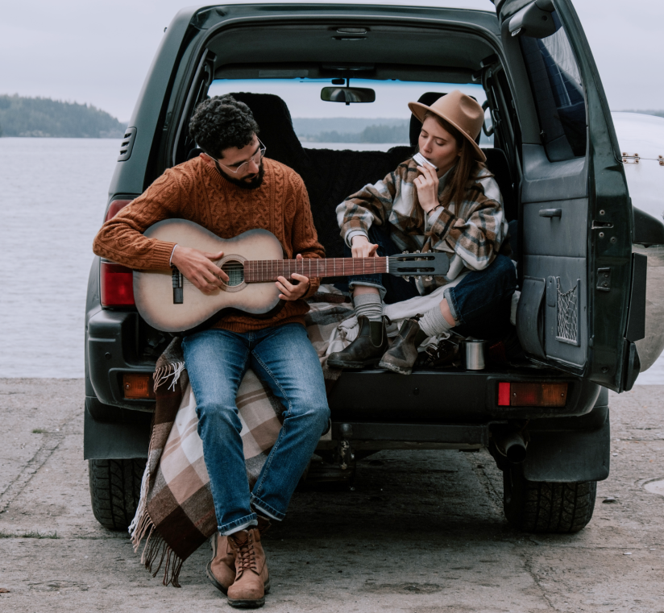
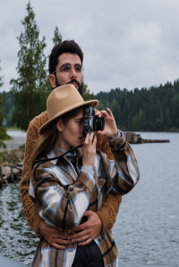
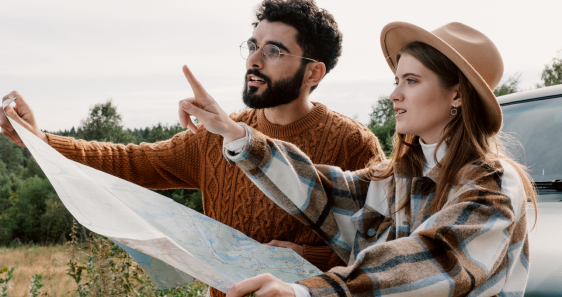
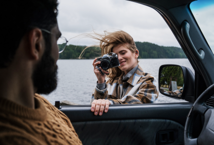
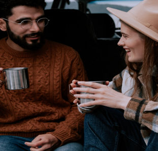
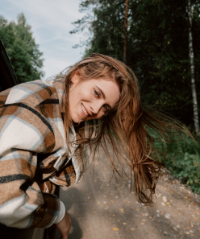
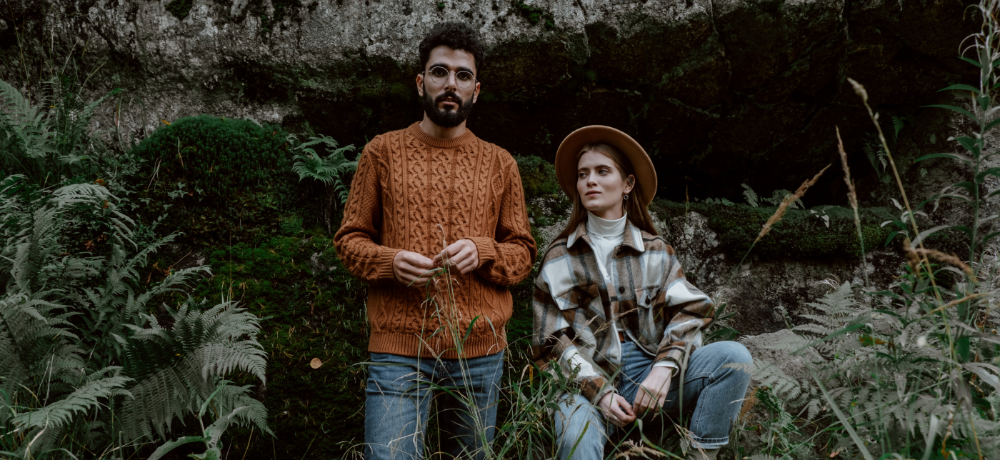

«Тимчасове переселення як вид активного відпочинку»
Останні декіль кароків багатьом з нас довелося шукати альтернативу звичному відпочинку. Вже не можна не було банально поїхати на море. Тож я зі своєю сім'єю поїхав у "подорож".
Ми з ранніх років подорожували з батьками. Це завжди було для нас довгоочікуваною подією і завжди приносило море позитивних емоцій. В основному ми подорожували приморськими містами. Перші кілька років ми зазвичай до моря діставалися поїздом. Там завжди була дуже комфортна і приємна обстановка. Чим ближче під'їжджали
до південного клімату, тим більше змінювався краєвид за вікном, і тим більше можна було закохатися у природу краю. Але потім почали подорожувати машиною, і виявилося, що одні й ті самі місця можуть викликати різні враження.

Коли ми планували поїздку, ми одразу подумали про те,
що для нас важливе. Нам необхідний хороший інтернет, щоб мати можливість працювати. Хотілося відвідати місця з водоймищами, щоб купуватись і ще ми цінуємо усамітнення, тишу. Більшість нашої подорожі ми планували зупинятися в мотелях і хостелах, але ще взяли з собою намет, щоб іноді ночувати на природі. Ми вирішили відвідати не популярні курортні міста України, а місця з мальовничою природою, річками, озерами. Ми маємо друзів, і ми планували організувати річковий сплав із ночівлею.
Ми не надто детально прораховували витрати до поїздки, проте нам не хотілося багато витрачати і ми намагалися заощаджувати, але без шкоди комфорту та враженням. У результаті ми витрачали гроші на щось, чого не було у рідному Запоріжжі, а на те, що є майже у кожному місті України ми не те, що економили, а просто не звертали увагу. Точну кількість витрат я не знаю, але я вважаю, що це мінімальні витрати, для гарного відпочинку у іншому місті.


Звичайно, крім їжі та житла не варто забувати про безпеку поїздки. Ми зробили туристичну страховку, оскільки сплавлялися річкою. До поїздки перевірили всю машину, зробили те, діагностику. Про всяк випадок, купили мінімум необхідних ліків. Також сказали близьким, що вирушаємо в подорож і завантажили програму Zenly, щоб вони могли знати, де ми знаходимося. Ще в нас була фінансова подушка на екстрений випадок. У результаті нам не знадобилися ні страховка, ні ліки, але такі прості дії дозволяють почуватися в безпеці. Коли передбачив усе заздалегідь, можна насолоджуватись поїздкою.

Звичайно, крім їжі та житла не варто забувати про безпеку поїздки. Ми зробили туристичну страховку, оскільки сплавлялися річкою. До поїздки перевірили всю машину, зробили те, діагностику. Про всяк випадок, купили мінімум необхідних ліків. Також сказали близьким, що вирушаємо в подорож і завантажили програму Zenly, щоб вони могли знати, де ми знаходимося. Ще в нас була фінансова подушка на екстрений випадок. У результаті нам не знадобилися ні страховка, ні ліки, але такі прості дії дозволяють почуватися в безпеці. Коли передбачив усе заздалегідь, можна насолоджуватись поїздкою.


